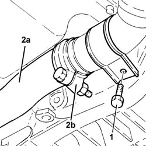
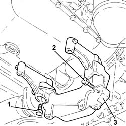
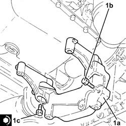

2110A60 manual gearbox/engine coupling bracket - r+r
- Path
- Procedures > 21 GEARBOX UNIT > 2110 MANUAL GEARBOX WITH DIFFERENTIAL > 2110A MANUAL GEARBOX AND DIFFERENTIAL ASSEMBLY > 2110A60 manual gearbox/engine coupling bracket - r+r
- Kind
- repair procedure (removal / refitting; the operation number is the code)
- Applies to
- engines: 1.3 JTD 16v; all production periods
- Interactive page
- https://sloeber94.github.io/elrnDB-fPnd/en/#/2752662
Applies to: engines: 1.3 JTD 16v; all production periods
 Removing
Removing
 Refitting
RefittingPosition the vehicle on the ramp.
If necessary, remove the exhaust pipe rubber mountings to facilitate the operation.
1. Undo the bolts fixing the catalytic converter mounting bracket to the manual gearbox/engine connecting bracket.
2. Loosen the collar (2a) and move aside the rigid pipe for the exhaust pipe between the catalytic converter and the silencer (2b).

Applies to: engines: 1.3 JTD 16v; all production periods
1. Undo the bolts securing the bracket between the manual gearbox/engine to the gearbox.
2. Undo the bolts securing the bracket between the manual gearbox/engine to the gearbox.
3. Remove the bracket between the manual gearbox/engine.

Applies to: engines: 1.3 JTD 16v; all production periods
Refitting
Removing1. Refit the bracket between the manual gearbox/engine (1a) in its seating, then secure it with the bolts (1b) and (1c) to the specified torque.
 | Fastening | Component | Ø | Value (daNm) |
|---|---|---|---|---|
1c | Bolt | GEARBOX/ENGINE COUPLING BRACKET | M8 | (Engine crankcase side) 2.7 ÷ 3.3 |

Applies to: engines: 1.3 JTD 16v; all production periods
Tighten the bolts fixing the catalytic converter mounting bracket to the manual gearbox/engine connecting bracket.
Refit the rigid exhaust pipe section between the catalytic converter and the silencer and secure it using the collar.
Refit the exhaust pipe rubber mountings, if they were removed previously.
Remove the car from the ramps.
Topics that link to this page (12)
- 1020B12 CHAIN-DRIVE VALVE GEAR COVER - R.R. AND GASKET REPLACEMENT FOR MODELS WITH AIR-CONDITIONER
- 1020D38 flywheel side oil seal - replace
- 1024B12 engine flywheels rr for versions with manual gearbox and air contioner
- 1032A12 CHAIN AND GEARS for timing system - R.R. for timing or Replacement.
- 1032B47 toothed drive pulley - r r for versions with air conditioner
- 1032B62 a/c duct pulley - r r
- 1032C40 Timing CHAIN TENSIONER PLATE - R.R.
- 1084B16 engine oil pump - r+r vehicles with a/c
- 1084B26 emgine oil intake duct - r r
- 1084B45 RIGID air supply PIPE between air-air heat exchanger and intermediate hose - R.R.
- 1810A20 clutch - r + r
- 2110A10 manual gearbox and differential - r + r